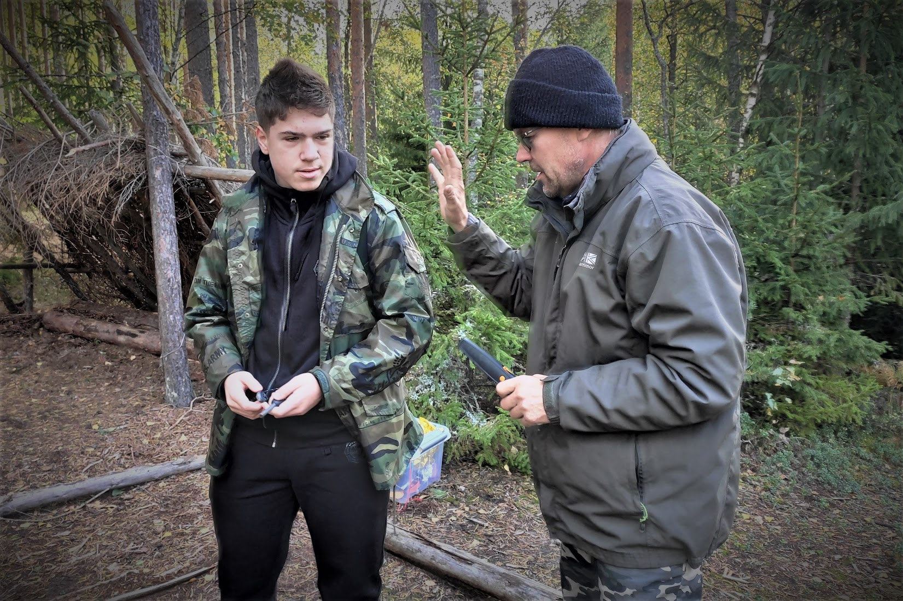
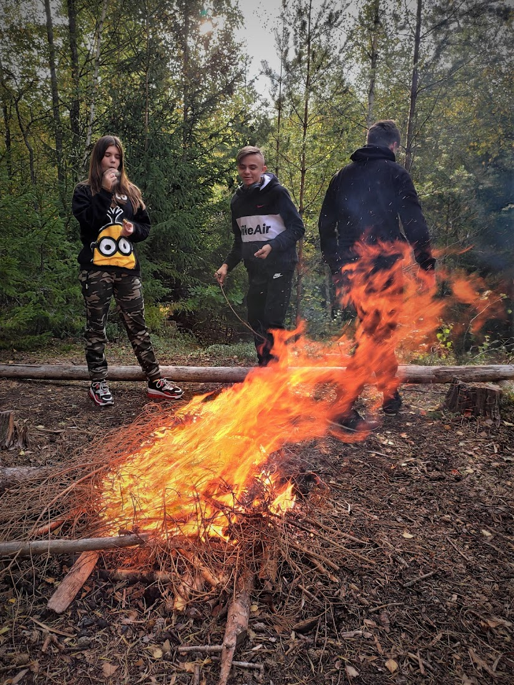
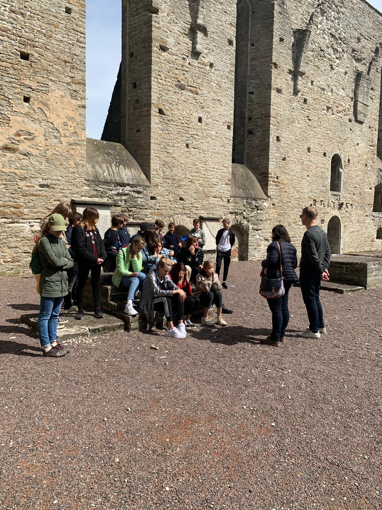
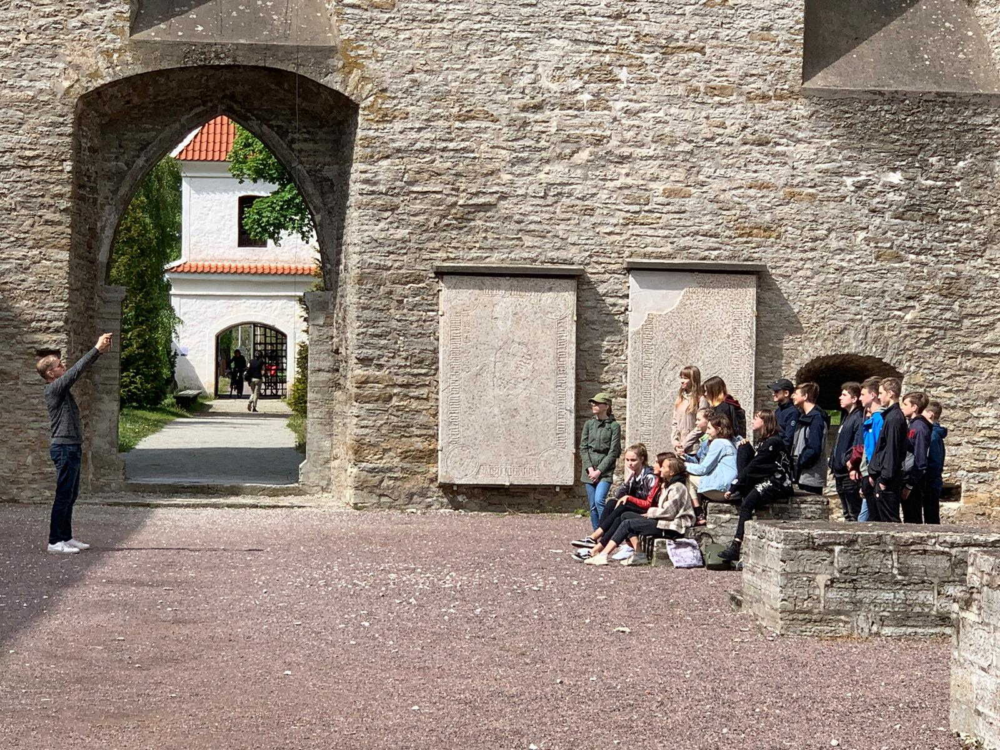
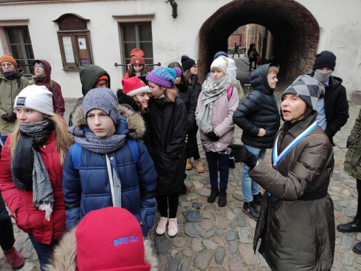
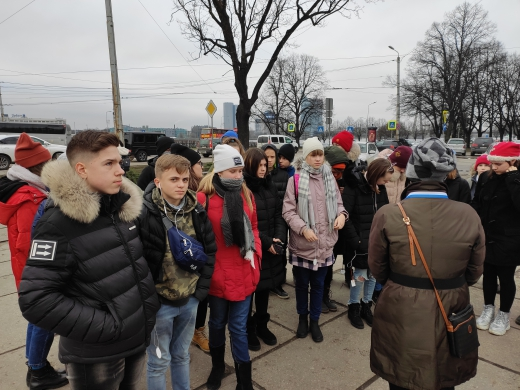
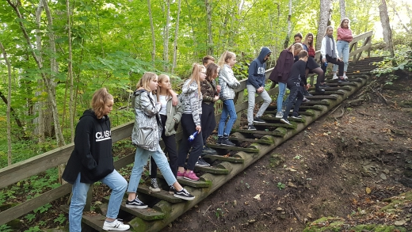
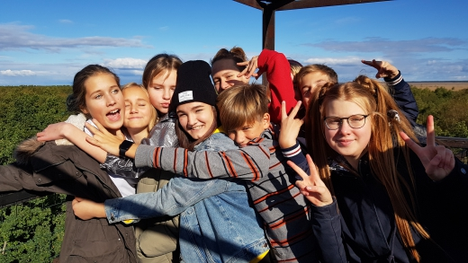
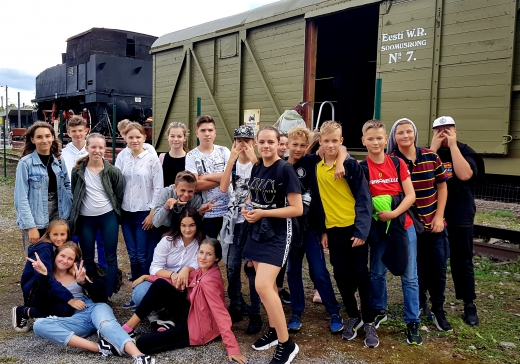

ВЫЖИВАНИЕ В ЛЕСУ


Осенью 2020 года наш 8А класс вместе с 8Б ездил на экскурсию в лес. На этой экскурсии нам показывали, как выживать в лесу, готовить еду на природе, как делать шалаш, издавать громкие звуки палкой, чтобы вас смогли найти и так далее. Нашему классу эта поездка очень понравилась.
КВЕСТ В ПИРИТАСКОМ МОНАСТЫРЕ


Окончание 2019/20 учебного года мы решили отметить квестом, который проходил в монастыре Святой Бригитты (Pirita klooster). На экскурсии нам рассказывали историю этого места, а также давали квест-задания: это были загадки, которые мы должны были разгадать или вопросы, на которые мы должны были найти ответы. Эта экскурсия была очень интересная и захватывающая. Было очень круто именно так закончить учебный год!
ПУТЕШЕСТВИЕ В ЛАТВИЮ


20 декабря 2019 года ученики наш 7А класса при поддержке нескольких учеников из параллельных классов отправились в однодневное путешествие в Латвию. Там мы посетили музей барона Мюнхгаузена в Дунте, прогулялись с экскурсоводом по Риге и перекусили в знаменитой таверне Лидо.
ПОЕЗДКА В МАТСАЛУ


23 сентября 2019 года ученики 7А и 7С класса на природную эксурсию в Матсалуский Национальный парк, известный, как центр защиты многочисленных гнездовых и перелетных птиц. Ученики побывали на берегу Матсалуского залива, в части пролива Вяйнамере, низовье реки Казари, увидели прибрежные тростники, заливные луга реки Казари, береговые пастбища. Авторы проекта: Ольга Калакаускене, Юлия Розова и Наталия Емец.
7А ПОСЕТИЛ БРОНЕПОЕЗД №7

4 сентября 2019 ученики 7А класса посетили бронепоезд №7. Этот восстановленный бронепоезд времен Освободительной войны в первый день сентября прибыл на столичный железнодорожный вокзал, где в течение месяца с ним могли ознакомиться все желающие.